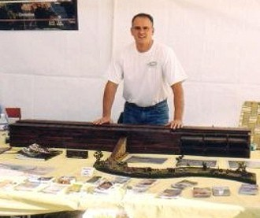
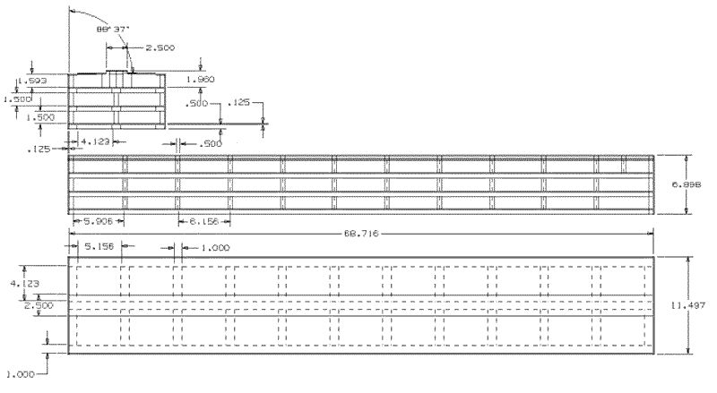

http://www.geocities.com/believerme/

Scott with his model of Noah's Ark at Beasley's Apple Orchard Festival.
Scott's model is HO gauge (1:87 scale), which is a common standard for model railways. This makes it easier to get comparable sized animals, people, railcars etc to help the viewer understand the size of the Ark.
The following image shows the layout of his Ark model. Instructions for building this design can be found at http://www.geocities.com/believerme/buildark.html
